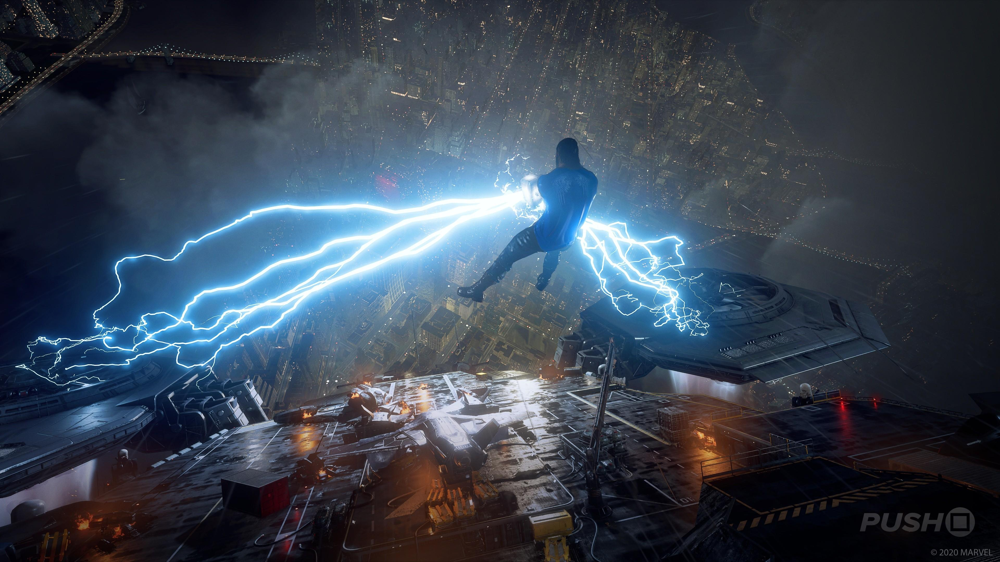

Tu decisión funciona. La energía del Teseracto es finalmente contenida y la brecha dimensional comienza a cerrarse. Las naves enemigas desaparecen y Nueva York vuelve a estar a salvo.
Sin embargo, utilizar semejante cantidad de energía tiene un precio. Perdés tus poderes y quedás inconsciente durante varias semanas.
Cuando despertás en una instalación médica de S.H.I.E.L.D., encontrás a Nick Fury esperándote. Te explica que los Vengadores lograron sobrevivir gracias a tu intervención y que tu valentía fue reconocida por todo el equipo.
Aunque ya no tenés habilidades especiales, recibís un nuevo traje y una invitación para formar parte oficialmente de los Vengadores.
La misión terminó, pero tu historia como héroe recién comienza.